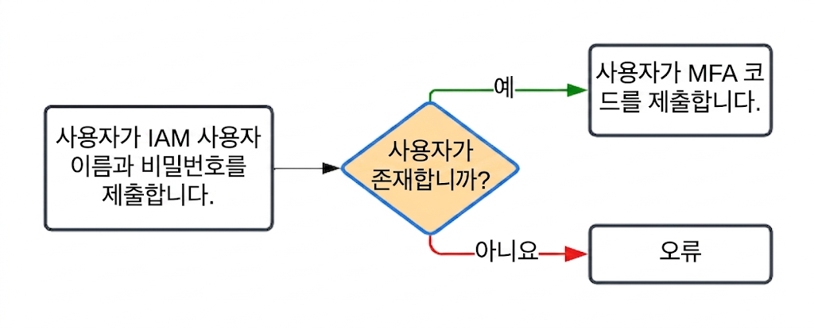
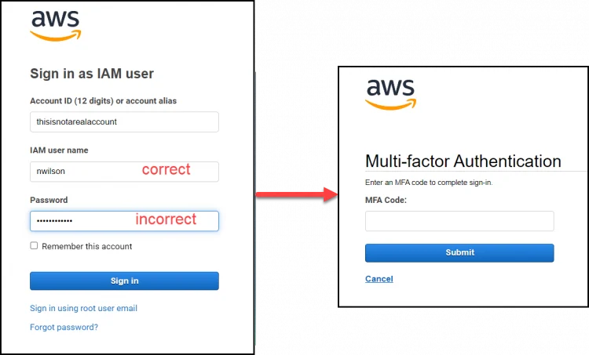
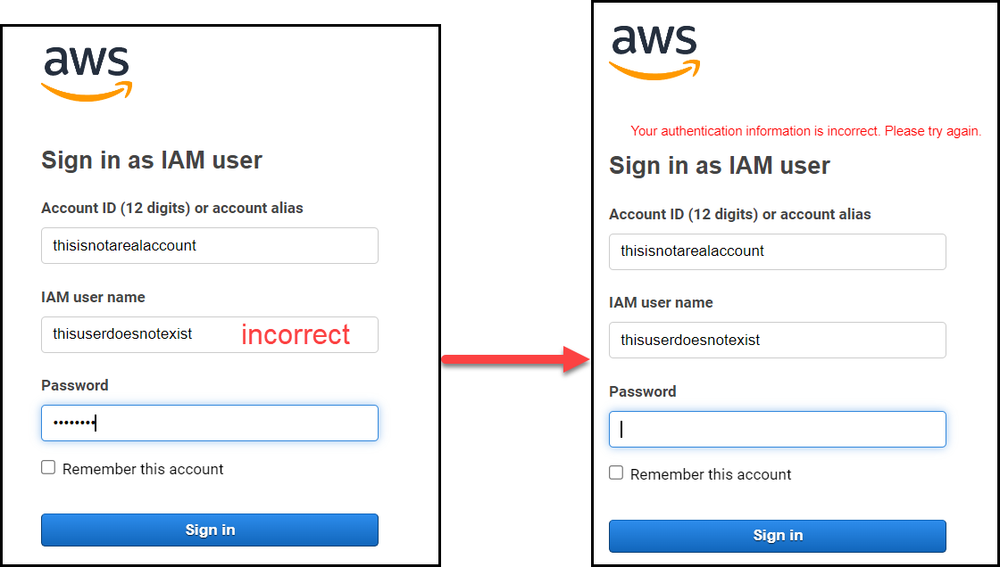
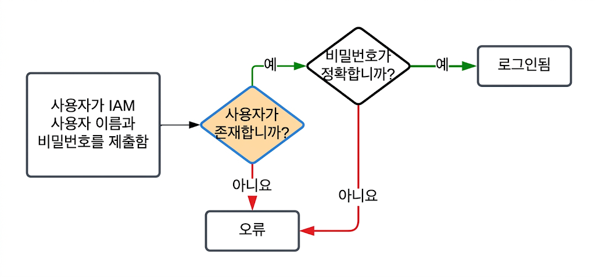
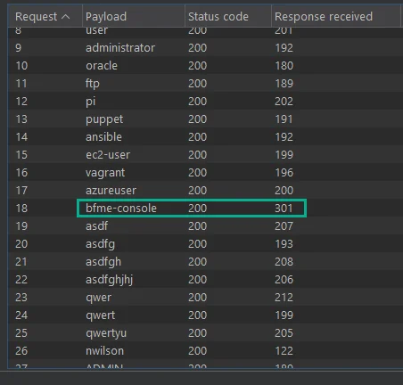
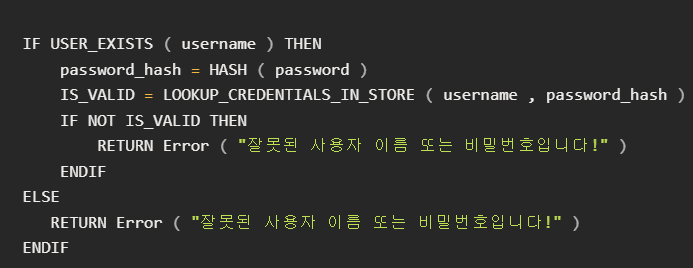
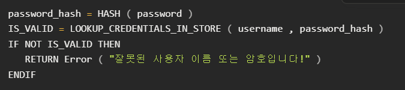
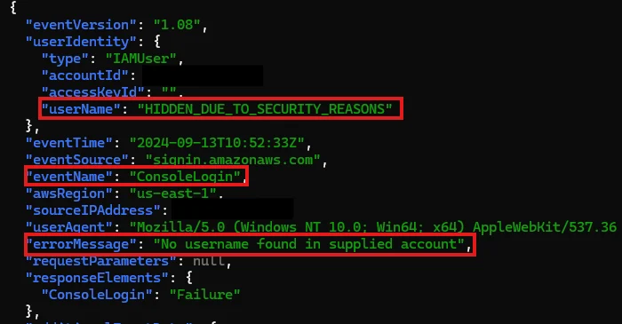
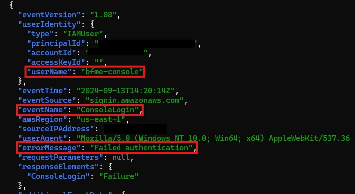

서론
사용자 이름 열거(User Enumeration) 취약점은 공격자가 유효한 사용자 계정을 식별할 수 있도록 하는, 공격의 초기 단계에서 활용되는 기본적인 취약점이다. 해당 취약점은 보안 업체인 Rhino Security Labs가 Amaxon web Service(AWS) 웹 콘솔을 대상으로 수행한 침투 테스트 과정에서 발견되었다. 총 두 가지 취약점이 확인되었으나, Amazon 측에서는 그 중 하나만 공식저으로 인정하였다. (본 포스트에서는 학습을 위해 두 가지 취약점을 모두 다룬다) 발견된 취약점은 Amazon 자격 증명 검증 과정의 로직 오류로 인해 발생하였으며, 그 결과 콘솔을 사용하는 모든 IAM 사용자 이름이 외부에 노출될 수 있는 위험이 존재했다.
본 글은 해당 내용을 학습 목적으로 재정리하였다.
발견 사항 1 - 사용자 이름 열거 (MFA 활성화)
IAM 사용자 계정에 MFA(다단계 인증)이 활성화된 경우, 로그인 과정에서 사용자 여부가 노출될 수 있는 문제가 발생한다. 이 취약점은 로그인 흐름에서 서로 다른 응답이 발생하는 지점에서 비롯된다. 아래 흐름도는 실제 사용자 경험(UI) 기준의 로그인 과정으로, 자격 증명을 제출한 후 두가지 서로 다른 상태로 나뉜다. 사용자가 IAM 계정 정보를 입력하면, 시스템은 먼저 해당 사용자의 존재 여부를 확인한다. 이후 계정이 존재할 경우 MFA 입력 단계로 진행되지만, 존재하지 않는 경우 에러 메시지를 반환한다.

사용자가 존재하는 경우, 비밀번호 일치 여부와 관계없이, 다음 페이지에서 MFA 코드를 입력이 요구된다.

반대로 사용자가 존재하지 않는 경우, 해당 사용자가 존재하지 않는다는
오류 메시지를 반환한다. 즉, 공격자는 해당 반응 차이를 통해 입력한
사용자 이름이 AWS IAM에 실제로 존재하는 계정임을 확인 가능하다.

발견 사항 2 (CVE-2025-0693) - 타이밍 공격을 통한 사용자 이름 열거
MFA를 사용하지 않는 사용자의 경우, 로그인 흐름을 아래와 같다.

사용자가 IAM 사용자명과 비밀번호를 입력하면, 시스템은 먼저 사용자 존재 여부를 확인한 뒤 비밀번호 일치 여부를 검사하여 로그인을 처리한다. 문제는 이 과정에서 처리 순서가 다르다는 점이다. 일반적으로는 사용자 이름과 비밀번호를 함께 검증하는 것이 자연스럽지만, 해당 구조에서는 사용자 존재 여부를 먼저 판단한 뒤 비밀번호를 검증하는 구조를 가져 사용자 존재 여부에 따라 처리 시간에 차이가 발생한다.
이러한 시간 차이를 이용하면 공격자는 응답 속도를 비교하여, 특정 사용자 이름이 실제로 존재하는지 추측 가능하다.
실제로 Rhino Security Labs는 이 차이를 확인하기 위해 Burp Suite의 Intruder 기능을 사용해 테스트를 진행했다. 테스트를 위해 “bfme-console”이라는 사용자를 생성하고, 해당 사용자에게 콘솔 로그인 권한을 부여한 뒤 MFA는 비활성화하였다.

요청을 시간 순서대로 정렬해 확인해보면, 미리 생성해둔 테스트 사용자 계정의 경우 응답 시간이 약 100ms 정도 더 길게 나타나는 것을 확인할 수 있다. 이러한 차이는 단순한 성능 차이가 아닌, 사용자 존재 여부를 판단할 수 있는 단서가 되기에 위험하다. 즉, 해당 응답 시간 차이를 분석하면, 사용자 존재 여부를 추론 가능하다는 것이다.
인증 타이밍 공격 방지
해당 열거형 공격을 방지하기 위해서는, 사용자가 실제로 존재하는
경우와 그렇지 않은 경우 모두 서버가 동일하게 동작하도록 만들어야
한다. 시간 차이가 발생하는 주된 이유는, 코드에서 자용되는 ‘빠른
종료(Early Return’) 방식 때문일 가능성이 높다. 예를 들어, 아래
코드처럼 사용자가 존재하지 않을 경우 ELSE 블록으로 이동하여 더 적은
처리를 수행한 뒤 오류를 반환하는 구조이다.
(해당 코드는 OWASP Authentication Cheat Sheet에서 발췌한 예시이다)

이러한 경우 아래처럼 모두 동일한 처리량을 소요하도록 하여 시간 차이를 방지하는 방법을 사용할 수 있다.

해당 두 가지 사용자 열거 공격은 모든 로그인 시도가 AWS CloudTrail에 기록된다는 특징을 가진다. 따라서 짧은 시간 동안 CloudTrail에 로그인 관련 이벤트가 비정상적으로 많이 발생하는 경우, 사용자 열거 공격이 시도되고 있을 가능성을 의심해볼 수 있다.


마무리
현재 해당 취약점(CVE-2025-0693)은 패치되었지만, 두 번째 취약점은 "허용된 위험"으로 분류되어 있다. 로그인은 대부분의 웹서비스에서 사용되는 기본 기능인 만큼, 사용자 열거 취약점은 생각보다 빈번히 발생할 수 있다. 특히 클라우드 환경처럼 자격 증명이 보안의 핵심이되는 구조에서는, 사용자 이름 존재 여부와 같은 작은 단서 하나도 공격의 출발점이 될 수 있다. 단순한 로직 차이가 큰 공격으로 이어질 수 있다는 점이 인상 깊었으며, 코드 처리부터 신중히 설계하는 것에 중요성을 인지했다.